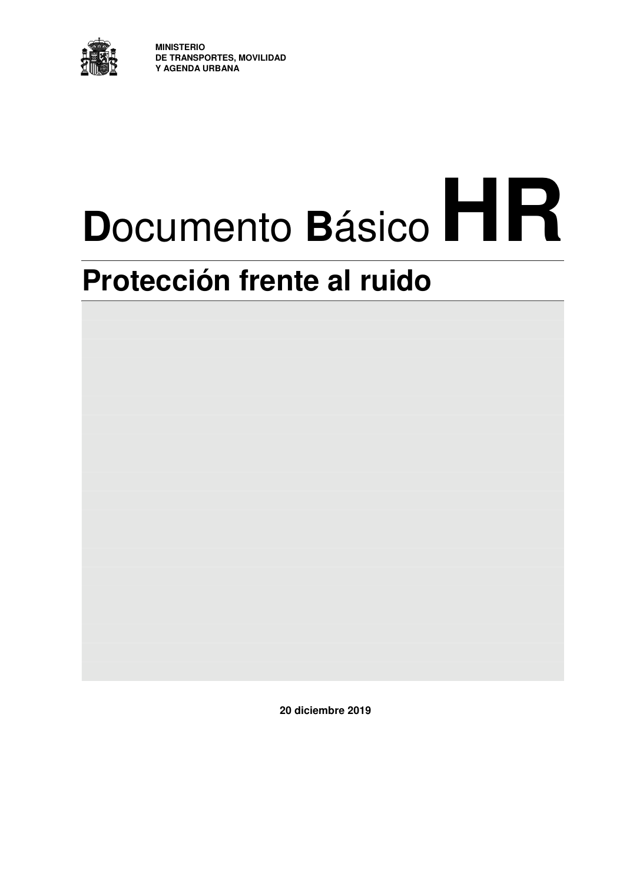

DB-HR Protección frente al ruido · edición 2019-12-20 · capa oficial
Documento DB-HR-oficial · SHA-256 del PDF a67baeca5138bb1f121f797d23a79a4557bd9ac4abacd954024893e05411eeab
Copia fiel del PDF fuente · Fuente oficial
Ficha de la disposición en la fuente oficial
Formatos: JSON del segmento · Markdown
Protección frente al ruido Disposiciones normativas publicadas en el Boletín Oficial del Estado El articulado de este Documento Básico fue aprobado por el Real Decreto 1371/2007, de 19 de octubre (BOE 23/10/2007) y posteriormente ha sido modificado por las disposicio- nes siguientes: - Corrección de errores del Real Decreto 1371/2007, de 19 de octubre (BOE 20/12/2007). - Real Decreto 1675/2008, de 17 de octubre, por el que se modifica el Real Decreto 1371/2007 (BOE 18/10/2008). - Orden VIV/984/2009, de 15 de abril (BOE 23/04/2009). - Corrección de errores y erratas de la Orden VIV/984/2009, de 15 de abril (BOE 23/09/2009). - Real Decreto 732/2019 de 20 de diciembre (BOE 27/12/2019) Documento Básico consolidado Esta versión del Documento Básico es un texto consolidado a partir de las sucesivas modificaciones que se han realizado en el Documento Básico a través de las disposicio- nes publicadas en el BOE. Este texto consolidado no tiene valor jurídico.
